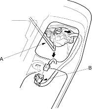
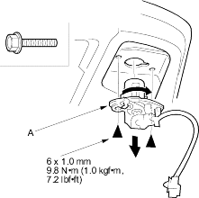

- Disconnect the cylinder rod (A), and if equipped, disconnect the cylinder switch connector (B), and detach it from the trunk lid.

- Remove the bolts securing the lock cylinder (A). Then turn the trunk lid lock cylinder 45°, and remove it.
Fastener Locations  : Bolt, 2
: Bolt, 2

- Install the lock cylinder in the reverse order of removal, and note these items:
- Make sure the cylinder switch connector is plugged in properly (if equipped) and the cylinder rod is connected properly.
- Make sure the trunk lid opens properly and locks securely.